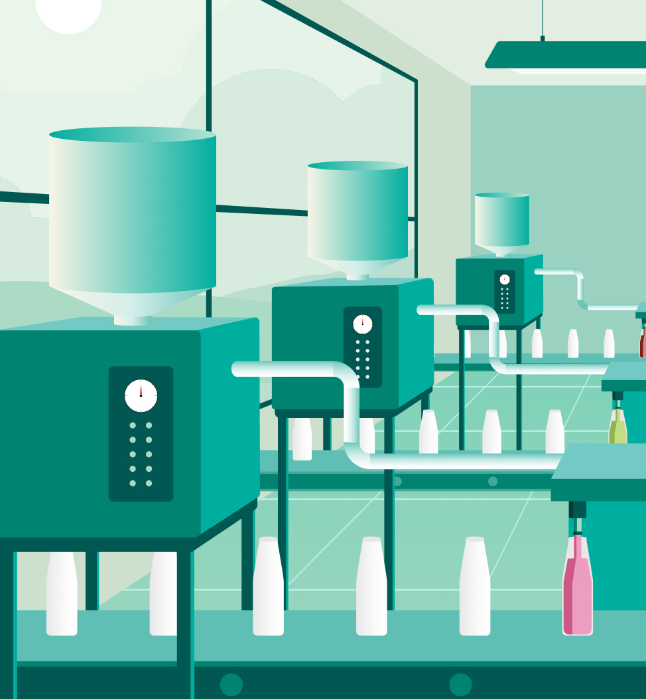

Nuôi dưỡng điều lành
Trở thành công ty hàng đầu chuyên nghiên cứu, sản xuất và cung cấp cho thị trường trong nước dòng nước giải khát chăm sóc sức khỏe thiên nhiên thuần Việt.
Công ty được khởi dựng từ một mong muốn giản dị: đem lại sức khỏe dài hạn cho người Việt bằng chính dược liệu Việt – tía tô, nha đam, bí đao, táo đỏ, sâm.
Người sáng lập từng nhớ mùi nước mát trong bếp nhà, từng uống chén trà táo đỏ của bà, và tin rằng những ký ức ấy xứng đáng được tái sinh theo phong cách hiện đại.